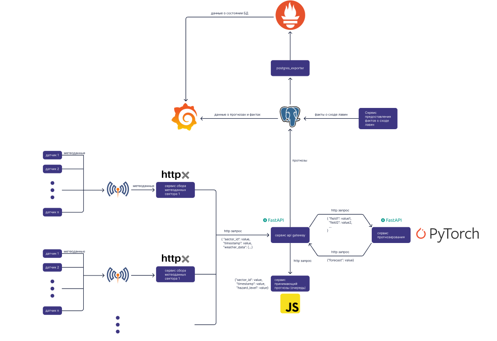
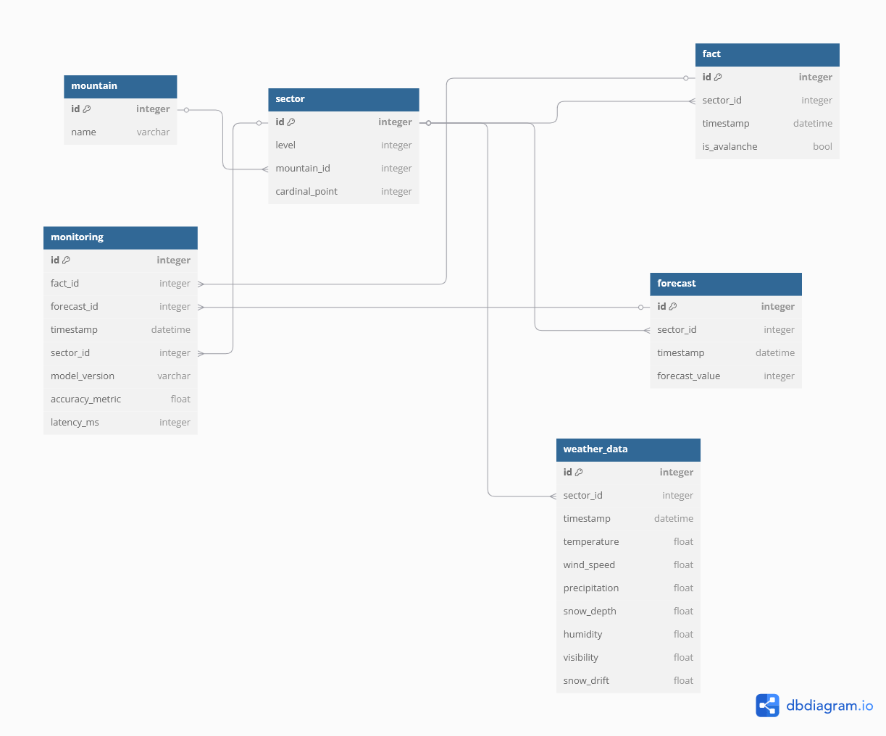
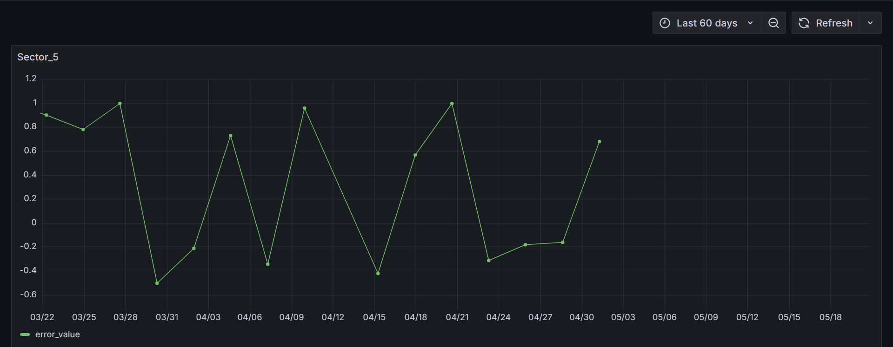
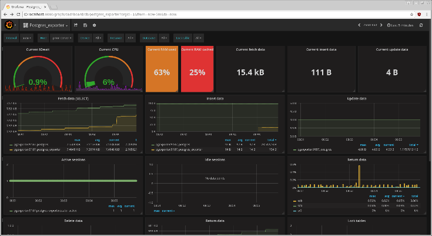

Cистема для прогнозирования лавин на основе метеоданных
Узнать большеСистема предназначена для анализа метеорологических данных и прогнозирования лавинной опасности в горных регионах. Она использует нейросеть Колмогорова-Арнольда (KAN) для точных прогнозов, что помогает спасательным службам принимать решения.
Посмотрите, как работает система мониторинга лавинной опасности:
Видео демонстрирует работу API, визуализацию прогнозов и мониторинг в Grafana.
Проект реализован как микросервисная архитектура с использованием MQTT, FastAPI и PostgreSQL.
ERD-диаграмма базы данных:
Python, FastAPI, PyTorch, SQLAlchemy
Docker, Harbor
Grafana, Prometheus, Postgres Exporter
Мониторинг качества модели KAN осуществляется через Grafana, где отображается ошибка прогнозов.
Состояние базы данных отслеживается через Postgres Exporter и Prometheus:
Разработчик: Илья Коновалов
Email: neiluamaibi@mail.ru
Telegram: t.me/IlyaKonovalov
GitHub: github.com/IlyaDev1